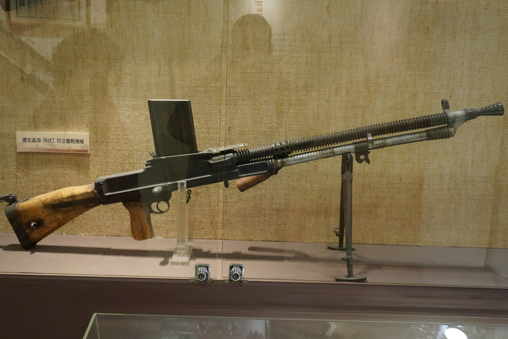

ZB26式輕機槍

ZB26式輕機槍（捷克語：Lehký kulomet vz. 26）是捷克國營兵工廠所生產的一款輕機槍。
該槍外表最大特色是其20發裝彈匣安裝在機匣上方，這令其瞄準基線要移向彈匣左側；輪型表尺也是其外貌特徵之一。
ZB26顯見的另一項特點是快拆槍管，其槍管上的提把不單方便更換槍管同時也方便持槍。
該槍曾廣銷各國，當中英國更採購其設計重製成布倫輕機槍，而後德國吞併捷克斯洛伐克後改稱之為MG26 (t)輕機槍（t是指捷克）。
- 捷克斯洛伐克在1921年起決定研發適合本國的輕兵器，在本型武器問世前，捷克採購多款外國的輕兵器以研思本國需要的最適構型；包括法國貝蒂埃步槍、德爾納機槍、霍奇克斯M1914重機槍、聖艾蒂安M1907中型機槍、美國白朗寧自動步槍、丹麥麥德森輕機槍等武器。在研發案當中有件代號「布拉格II」（Praha II），是由烏爾斯基·布羅德兵工廠及捷克國營兵工廠布拉格廠合作之輕量級彈鏈供彈武器。1923年該研究案啟動時，布拉格廠只是間規模比較小的武器生產廠，受限於工業產能因此決定走精密度較高的全自動武器研發方針；布拉格廠所屬的工程師瓦克拉夫·哈力克與他的兄弟伊曼紐爾·哈力克與兩位波蘭籍工程師助手在1年內完成了布拉格II計畫原型樣槍，原型槍代號布拉格vz. 24。但才沒過多久，因布拉格廠陷入財務危機，哈力克兄弟就被排除在槍枝設計團隊外，烏爾斯基·布羅德兵工廠收購布拉格廠後繼續改良vz. 24機槍，布拉格II也被布拉格I-23（Praha I-23）所取代，原本的彈鏈供彈設計被更改為彈匣供彈，並解決一些技術問題；雖然在法律上有部份問題尚未解決，但該款新型輕機槍在1926年底已開始量產，1928年進入捷克陸軍服役，代號ZB vz. 26。後來推出的改良版稱為ZB vz. 30
ZB vz. 26的理論射速為500發／分鐘，野戰操作實際射速約為每分鐘180發／分鐘，槍管在持續射擊約200發後就要更換。
捷克陸軍除了將ZB vz. 26配發給步兵單位外，也普遍裝設在Škoda公司製裝甲車上，捷克國營兵工廠提供各種口徑版本供客戶挑選（最暢銷的版本是7.92×57公釐毛瑟口徑）；從1926年底量產至1939年納粹德國併吞捷克控制武器出口之前，捷克本國一共生產了145,000挺ZB vz. 26／vz. 30，其中主要產品為vz. 26，計生產12萬挺，留存資料顯示這些機槍被賣到世界上的24個國家，主要客戶包括玻利維亞、保加利亞、南斯拉夫王國、土耳其及中華民國。
納粹德國併吞捷克斯洛伐克之後，德意志國防軍使用繼承自捷克軍隊的ZB vz. 26輕機槍，並改名為MG 26(t) (Tschechisch，即德語中「捷克」的意思）。作為輕機槍，其功能與MG34相近。二戰初期，武裝親衛隊無法通過正常渠道獲得列裝德意志國防軍的武器，於是大量採用7.92×57公釐毛瑟口徑的ZB vz. 26機槍。英國和ZB的工程師在ZB vz. 26的基礎上設計了在西方盟國間遠近聞名的布倫輕機槍。中華民國也引進了大量ZB vz. 26機槍，根據ZB工廠記錄，1927到1939年間中國一共進口了30,249挺ZB vz. 26機槍。中國本土仿造的ZB vz. 26機槍更是不計其數。這種機槍在中華人民共和國立國後繼續使用到韓戰甚至更後期。第一次印度支那戰爭期間，越盟游擊隊和越南人民軍都使用了ZB vz. 26機槍。